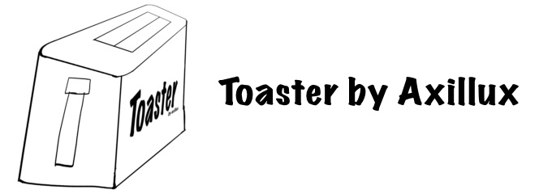

Toaster is a bot that deletes MrBeast, Andrew Tate and etc. scams. (crypto casinos to be short). And yeah that's it.
What it does
- Real-time detection. Every message's text and images are compared against a scam-reference database using AI embeddings (NVIDIA NIM, model llama-nemotron-embed-vl-1b-v2). Re-cropped or re-compressed scam images still match.
- Instant action. The scam message is deleted immediately, the scammer gets a DM, and the punishment configured by server admins is applied: timeout (up to 28 days), kick, or ban.
- Whole-wave cleanup. When a compromised account spams several channels at once, Toaster records the entire wave and removes every message by the scammer across all channels and threads, re-checking until nothing is left.
- Cross-server protection. One detection removes the account from every server Toaster is in. Each server keeps its own punishment setting and incident log.
- History backfill. Server already flooded? /scan walks up to 90 days of history, deletes found scam, punishes senders, and reports live results. Dry-run mode previews everything without deleting.
Commands
/scan days:90 — backfill sweep of history: find and delete old scam, punish senders. Add dry_run:True to preview without deleting./settings — punishment, mute duration, log channel, custom DM template./report — detection stats for this server or globally./about — what this bot is and how many servers it protects./avatar — show a user's avatar in full size./legal — Privacy Policy and Terms of Service links./ping — latency check.
Links